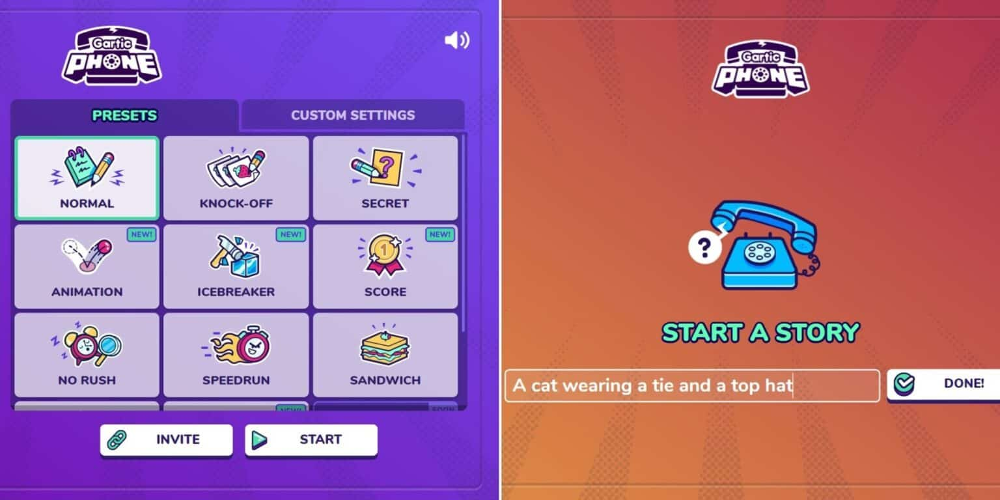

How do you play?
- 1. Head over to Gartic Phone’s website [https://garticphone.com/]
- 2. Play as an anonymous player or log in using Twitch or Discord
- 3. Select the number of players you want to add to the game
- 4. Choose one of the game modes (maybe start with normal mode) or create a custom mode
- 5. Click on the invite option and copy your game’s id and send it to your friends.
- 6. Once they’ve joined, click on Start to begin.
